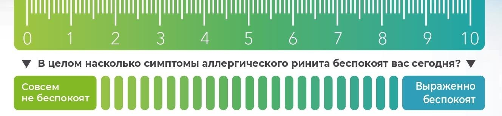

Сверка с PDF рубрикатора выполняется…
Аллергический ринит
Клинические рекомендации от 11.07.2024 · взрослые и дети
Основные положения
- Диагноз аллергического ринита:Обязательные критерии
- не менее двух из четырёх симптомов, беспокоящих ежедневно не менее часа: заложенность носа, ринорея, чихание, зуд в носу;
- связь симптомов с аллергеном;
- положительные результаты аллергологического обследования.
- Лечение ступенчатое:
- первая ступень: один препарат: антигистаминный внутрь или интраназально, кромоглициевая кислота или монтелукаст;
- вторая ступень: один препарат, предпочтительно интраназальный глюкокортикостероид;
- третья ступень: интраназальный глюкокортикостероид и один или несколько препаратов первой ступени;
- четвёртая ступень: омализумаб, решение о котором принимает только специалист.
- Интраназальные глюкокортикостероиды превосходят по эффективности антигистаминные препараты для приёма внутрь и кромоглициевую кислоту, особенно при выраженной заложенности носа.
- Сосудосуживающие препараты допустимы только при обострении с выраженной заложенностью носа и только коротким курсом, 3–7 дней.
- Контроль симптомов оценивают по визуальной аналоговой шкале и тесту «дыхание с закрытым ртом» при первичном обращении и через 2–4 недели лечения.
- Лечение, как правило, амбулаторное.Показания к госпитализации
- крайне тяжёлое или осложнённое течение;
- у детей тяжёлое обострение с выраженной заложенностью носа;
- плановое проведение ускоренного курса АСИТ.
- Хирургическое лечение показано только при сопутствующей патологии. Плановые операции в сезон пыления причинно-значимых аллергенов не выполняют.
Клиническая картина и классификация
Определение
Аллергический ринит является IgE-опосредованным воспалительным заболеванием слизистой оболочки носа, развивающимся под действием аллергенов. Для него характерны не менее двух симптомов, проявляющихся ежедневно в течение часа и более:
- заложенность носа;
- ринорея;
- чихание;
- зуд в полости носа.
Классификация
- сезонный;
- круглогодичный (бытовой);
- профессиональный.
- интермиттирующий: симптомы беспокоят менее 4 дней в неделю или менее 4 недель в году;
- персистирующий: симптомы сохраняются более 4 дней в неделю и более 4 недель в году.
- лёгкое течение: симптомы не нарушают сон и повседневную активность;
- среднетяжёлое течение: симптомы препятствуют работе, учёбе, занятиям спортом и нарушают сон;
- тяжёлое течение: без лечения пациент не может нормально работать, учиться и спать.
Кроме того, выделяют периоды обострения и ремиссии.
В формулировке диагноза указываются аллергены, к которым выявлена повышенная чувствительность.
Отдельной формой является локальный аллергический ринит. Для него характерны типичные симптомы с чёткой связью с аллергеном при отрицательных результатах кожных проб и исследования специфических IgE в крови. Определение специфических IgE в носовом секрете в России не проводится, назальные провокационные тесты положительны.
Жалобы и анамнез
- заложенность носа с дыханием через рот, сопением, храпом и изменением голоса;
- водянистые выделения из носа;
- чихание, нередко приступообразное, чаще в утренние часы;
- зуд, реже жжение в носу, в ряде случаев зуд нёба и глотки;
- на поздних стадиях снижение обоняния.
Характерен «аллергический салют» (потирание кончика носа ладонью), вследствие которого формируется поперечная носовая складка.
У каждого пациента с подозрением на аллергический ринит подробно собирают жалобы и анамнез.
Ведущие симптомы- круглогодичная форма: заложенность носа со слизистыми выделениями;
- сезонная форма: приступы чихания, зуд и ринорея.
- связь симптомов с аллергеном;
- аллергические заболевания у пациента и его кровных родственников.
Обильные выделения и нарушение проходимости слуховых труб могут сопровождаться раздражением и отёком кожи над верхней губой и в области крыльев носа, носовыми кровотечениями после сморкания, болью в горле и покашливанием, болью и треском в ушах при глотании, снижением слуха.
При сезонном рините часто встречается оральный аллергический синдром, представляющий собой перекрёстную непереносимость свежих фруктов, овощей, орехов и семян. Его проявления варьируют от зуда в полости рта до анафилаксии.
Физикальное обследование
Обследование всех пациентов включает осмотр верхних дыхательных путей, общий осмотр и аускультацию для выявления бронхиальной астмы, конъюнктивита и атопического дерматита.
Характерные признаки- затруднённое носовое дыхание, приоткрытый рот;
- тёмные круги под глазами;
- мацерация кожи над верхней губой;
- отёчность лица.
Скрыто: локальный аллергический ринит, дополнительные симптомы, оральный аллергический синдром.
В учебнике: заболевания полости носа. Анатомия и физиология: нос, околоносовые пазухи.
Диагностика
Критерии диагноза
- характерные жалобы: не менее двух симптомов из четырёх, ежедневно не менее часа;
- данные анамнеза о связи с аллергеном или о других аллергических заболеваниях;
- положительные результаты аллергологического обследования.
- риноскопия и эндоскопическое исследование;
- дифференциальная диагностика;
- выявление осложнений и анатомических нарушений;
- определение показаний к хирургическому лечению.
- кожные и провокационные тесты и оценка их результатов;
- исключение бронхиальной астмы;
- решение вопроса об аллерген-специфической иммунотерапии (АСИТ).
Передняя риноскопия
Выполняется всем пациентам.
Диагностические признаки- отёк носовых раковин;
- обильный водянистый секрет;
- слизистая оболочка ярко-красная в период обострения сезонного ринита;
- слизистая оболочка цианотичная или серая при круглогодичном рините, в ряде случаев пятнистая («мраморная», симптом Воячека);
- полипы.
Эндоскопическое исследование полости носа, носоглотки и околоносовых пазух
- неэффективность стандартной терапии;
- осложнённое течение ринита.
Проба с сосудосуживающим средством позволяет оценить обратимость назальной обструкции.
Эндоскопическая картина полости носа при аллергическом рините

Кожные пробы
При отсутствии противопоказаний проводят prick-тесты или скарификационные пробы.
Показания- подтверждение аллергической природы ринита;
- выявление причинно-значимых аллергенов;
- решение вопроса об АСИТ.
Пробы проводят в аллергологическом кабинете.
На результат влияют- возраст младше 5 и старше 60 лет;
- приём системных глюкокортикоидов, антигистаминных и психотропных препаратов;
- дермографизм: ложноположительный результат;
- недавно перенесённая острая аллергическая реакция: ложноотрицательный результат.
Накануне и в день постановки теста антигистаминные препараты системного действия не принимают.
Пробы не проводят- при выраженном обострении заболевания, например в сезон пыления причинных растений;
- при повреждении кожи обоих предплечий и спины;
- при невозможности отменить антигистаминные препараты системного действия;
- во время беременности и грудного вскармливания.
Специфические IgE в сыворотке крови
- кожные пробы противопоказаны или невозможны;
- результат кожных проб сомнителен;
- результат кожных проб расходится с данными анамнеза.
При использовании метода ImmunoCAP результат считается положительным при значении более 0,70 kU/l.
Молекулярная (компонентная) диагностика всем пациентам не показана.
Показания- расхождение данных анамнеза и результатов кожных проб и специфических IgE;
- неэффективность АСИТ;
- назначение АСИТ рекомбинантными аллергенами.
При подозрении на появление новой клинически значимой сенсибилизации исследование можно повторить в течение года.
Назальный провокационный тест с аллергенами выполняется только взрослым и только аллергологом-иммунологом в аллергологическом кабинете или стационаре.
Показания- расхождение данных анамнеза и результатов других методов диагностики;
- множественная сенсибилизация, когда для АСИТ нужно выбрать клинически значимый аллерген.
Общий IgE
Для диагностики аллергического ринита исследование общего IgE нецелесообразно, поскольку не несёт необходимой диагностической информации.
- только перед назначением омализумаба (с 12 лет, при тяжёлом течении): по уровню общего IgE рассчитывают дозу препарата.
Общий (клинический) анализ крови
- выраженные симптомы в период обострения;
- подготовка к АСИТ.
- повышение содержания эозинофилов;
- лейкоцитоз со сдвигом лейкоцитарной формулы влево служит поводом для поиска инфекции, прежде всего острого риносинусита.
Цитологическое исследование смывов из полости носа
- выраженные симптомы в период обострения.
- эозинофилия носового секрета 10% и более.
Рентгенография околоносовых пазух
- симптомы риносинусита: гнойные выделения, боль в проекции пазух, головная боль, повышение температуры тела;
- лейкоцитоз со сдвигом лейкоцитарной формулы влево.
Компьютерная томография околоносовых пазух
- неэффективность лечения;
- выраженная и длительная назальная обструкция;
- стойкая аносмия;
- отрицательные результаты аллергологического обследования, прежде всего при подозрении на полипозный риносинусит.
Спирометрия с бронхолитиком
- кашель, свистящее дыхание, одышка;
- подготовка к АСИТ: выявление скрытого бронхоспазма.
Электрокардиография
- подготовка к инъекционной АСИТ.
Дифференциальная диагностика
- инфекционный ринит;
- аномалии внутриносовых структур;
- аденоиды у детей;
- полипозный риносинусит;
- эозинофильный ринит;
- лекарственный ринит: на фоне приёма нестероидных противовоспалительных препаратов, альфа- и бета-адреноблокаторов, ингибиторов ангиотензинпревращающего фермента, резерпина, длительного применения деконгестантов;
- гормональный ринит: беременность, пубертатный период, менструальный цикл, приём контрацептивов, акромегалия, гипотиреоз;
- профессиональный ринит;
- атрофический ринит пожилых;
- пищевой и алкогольный ринит;
- идиопатический ринит;
- первичная цилиарная дискинезия и муковисцидоз.
Скрыто: молекулярная диагностика, назальный провокационный тест.
Лечение
Целью лечения является полный контроль симптомов. При продолжающемся контакте с аллергеном, табачным дымом или другими раздражителями достижимо лишь уменьшение выраженности симптомов.
Ступенчатая терапия таблица 1 в тексте КР
На любой ступени- исключение контакта с аллергеном;
- хирургическое лечение сопутствующей патологии при наличии показаний;
- рассмотрение вопроса об АСИТ.
- антигистаминный препарат без седативного эффекта внутрь;
- антигистаминный препарат интраназально;
- кромоглициевая кислота интраназально;
- монтелукаст.
- интраназальный глюкокортикостероид (предпочтительно);
- антигистаминный препарат внутрь или интраназально;
- монтелукаст.
- антигистаминный препарат внутрь;
- антигистаминный препарат интраназально;
- монтелукаст.
Омализумаб при тяжёлом течении, с 12 лет. Назначается только специалистом.
Препараты скорой помощи на любой ступени: сосудосуживающие препараты коротким курсом или глюкокортикоиды внутрь.
Системные антигистаминные препараты
Антигистаминные препараты без седативного эффекта рекомендованы всем пациентам: они уменьшают зуд, чихание, ринорею и заложенность носа. Цетиризин в высоких дозах чаще других препаратов вызывает сонливость.
Назначение седативных антигистаминных препаратов первого поколения не рекомендуется, поскольку они вызывают сонливость, нарушают сон и могут приводить к развитию апноэ во сне.
| Препарат | Доза |
|---|---|
| Дезлоратадин |
|
| Левоцетиризин |
|
| Лоратадин |
|
| Фексофенадин |
|
| Цетиризин |
|
| Эбастин |
|
| Рупатадин |
|
| Биластин |
|
Интраназальные глюкокортикостероиды
- среднетяжёлое и тяжёлое течение, особенно при выраженной заложенности носа.
По эффективности превосходят антигистаминные препараты для приёма внутрь и кромоглициевую кислоту, уменьшают и глазные симптомы.
Нежелательные явления- сухость слизистой оболочки;
- носовые кровотечения;
- редко перфорация носовой перегородки.
Пациента обучают правильной технике введения спрея.
| Препарат | Доза в каждый носовой ход |
|---|---|
| Мометазон |
|
| Флутиказона фуроат |
|
| Флутиказона пропионат |
|
| Будесонид |
|
| Беклометазон |
|
Интраназальные антигистаминные и комбинированные препараты
Интраназальные антигистаминные препараты быстро, в течение 30 минут, уменьшают выраженность симптомов. Их применяют в монотерапии или в сочетании с другими препаратами; возможна сухость слизистой оболочки носа.
При необходимости одновременного интраназального применения антигистаминного препарата и глюкокортикостероида целесообразно назначение одного комбинированного спрея.
| Препарат | Доза в каждый носовой ход |
|---|---|
| Азеластин |
|
| Левокабастин |
|
| Азеластин и флутиказон |
|
| Азеластин и мометазон |
|
| Мометазон и олопатадин |
|
Монтелукаст и кромоглициевая кислота
Монтелукаст может назначаться при любой степени тяжести, в монотерапии или в сочетании с другими препаратами, однако по эффективности он уступает интраназальным глюкокортикостероидам.
При сопутствующей бронхиальной астме монтелукаст позволяет контролировать оба заболевания. Курс лечения от 1 до 3 месяцев и более; согласно инструкции, ограничений по длительности применения нет.
При необходимости назначения и антигистаминного препарата внутрь, и монтелукаста возможно применение комбинированной таблетки левоцетиризина с монтелукастом.
Кромоглициевую кислоту интраназально используют при лёгком течении. Препарат безопасен, однако по эффективности уступает антигистаминным препаратам, монтелукасту и интраназальным глюкокортикостероидам.
| Препарат | Доза |
|---|---|
| Монтелукаст |
|
| Левоцетиризин и монтелукаст |
|
| Кромоглициевая кислота, спрей |
|
Сосудосуживающие препараты
При обострении с выраженной заложенностью носа сосудосуживающие препараты применяют коротким курсом, 3–7 дней.
Длительное применение не рекомендуется: после 10 дней развиваются привыкание, отёк слизистой оболочки и медикаментозный ринит.
При необходимости интраназального применения и антигистаминного, и сосудосуживающего препарата возможно назначение комбинации диметиндена с фенилэфрином, не более 7 дней.
| Препарат | Доза в каждый носовой ход |
|---|---|
| Оксиметазолин |
|
| Ксилометазолин |
|
| Диметинден и фенилэфрин |
|
Тяжёлое течение
При тяжёлом обострении или неэффективности третьей ступени возможно назначение короткого курса глюкокортикоидов внутрь.
- терапия четвёртой линии или лечение тяжёлого обострения;
- доза преднизолона, метилпреднизолона или дексаметазона подбирается индивидуально;
- преднизолон в таблетках противопоказан детям до 3 лет.
Введение растворов и депо-форм глюкокортикоидов в носовые раковины недопустимо: риск тяжёлых осложнений вплоть до слепоты.
Назначение депо-форм глюкокортикоидов не рекомендуется в связи с быстрым развитием побочных эффектов, вплоть до надпочечниковой недостаточности.
Назначение омализумаба рассматривается с 12 лет при тяжёлом персистирующем течении или тяжёлом обострении в случае неэффективности третьей ступени.
Решение о назначении таргетной терапии принимает врачебный консилиум. Препарат вводится подкожно каждые 2 или 4 недели в дозе от 75 до 600 мг в соответствии с таблицей дозирования. При сезонном рините у пациентов с тяжёлым течением, которые своевременно не прошли АСИТ, введение начинается не менее чем за неделю до начала пыления и продолжается до его окончания. Эффект омализумаба развивается в течение 3–7 дней; при коротком сезоне пыления (1 месяц) полного контроля симптомов можно достичь 1–2 инъекциями.Немедикаментозное лечение
Всем пациентам рекомендуется по возможности избегать контакта с аллергеном. Даже частичное ограничение контакта облегчает течение заболевания и снижает потребность в лекарственных препаратах.
Рекомендуется применение изотонических солевых растворов для носа, в том числе на основе морской воды.
Перед введением интраназального глюкокортикостероида полость носа целесообразно промыть: это улучшает контакт препарата со слизистой оболочкой и снижает частоту сухости и носовых кровотечений.
Аллерген-специфическая иммунотерапия
Проведение АСИТ рассматривается у всех пациентов в период ремиссии, в том числе медикаментозной. Метод уменьшает выраженность симптомов и потребность в лекарственных препаратах, предупреждает развитие бронхиальной астмы и расширение спектра аллергенов.
Показания, противопоказания и выбор аллергена определяются аллергологом-иммунологом, которым и назначается АСИТ.Хирургическое лечение
К хирургическому лечению прибегают только при сопутствующей патологии; показания определяются оториноларингологом по данным эндоскопического и рентгенологического исследования. Плановые операции в сезон пыления причинно-значимых аллергенов не выполняют.
В сезон цветения растений, к пыльце которых есть аллергия, не рекомендуется и профилактическая вакцинация. Её проводят до начала сезона цветения или откладывают до его завершения.Нетрадиционные методы
Гомеопатия, фитотерапия, гипноз, техники релаксации, ионизаторы воздуха и физиотерапия не рекомендуются в связи с отсутствием доказательств их эффективности.
Иглоукалывание может рассматриваться в составе комплексной терапии.
Скрыто: левоцетиризин с монтелукастом, диметинден с фенилэфрином, дозы и начало действия омализумаба, нетрадиционные методы.
Алгоритм действий врача при аллергическом рините
- 1
Клинический анамнез аллергического ринита
Пациент предъявляет жалобы на заложенность носа, водянистые выделения, приступообразное чихание или зуд в носу, при этом симптомы связаны с контактом с аллергеном. Подробно собирают жалобы и анамнез: уточняют связь симптомов с аллергеном, аллергические заболевания у пациента и его кровных родственников.
Какова первоначальная тактика?
- 2
Диагностика
Диагноз устанавливается по характерным жалобам (не менее двух из четырёх симптомов ежедневно не менее часа), данным анамнеза о связи с аллергеном и положительным результатам аллергологического обследования. Обследование включает осмотр верхних дыхательных путей, общий осмотр и аускультацию для выявления бронхиальной астмы, конъюнктивита и атопического дерматита.
Какое обследование необходимо в первую очередь?
- 3
Консультация оториноларинголога
Задачами оториноларинголога являются передняя риноскопия и эндоскопическое исследование, дифференциальная диагностика, выявление осложнений и анатомических нарушений, определение показаний к хирургическому лечению. При риноскопии отмечают отёк носовых раковин, обильный водянистый секрет, ярко-красную слизистую оболочку при обострении сезонного ринита или цианотичную и серую при круглогодичном рините.
- 4
Исключено наличие другой патологии?
Исключают заболевания, протекающие со схожими симптомами: инфекционный ринит, аномалии внутриносовых структур, аденоиды у детей, полипозный риносинусит, эозинофильный, лекарственный, гормональный, профессиональный и идиопатический ринит, первичную цилиарную дискинезию и муковисцидоз.
Исключена ли другая патология?
- 5
Лечение в соответствии с протоколом другого диагноза; рассмотреть хирургическое лечение
конец алгоритмаЛечение проводят в соответствии с клиническими рекомендациями по установленному диагнозу; при сопутствующей патологии рассматривают хирургическое лечение. Хирургическое лечение при аллергическом рините показано только при сопутствующей патологии, плановые операции в сезон пыления причинно-значимых аллергенов не выполняют.
- 6
Диагноз АР подтверждён?
Диагноз аллергического ринита подтверждается при сочетании характерных жалоб, связи симптомов с аллергеном и положительных результатов аллергологического обследования. В формулировке диагноза указывают аллергены, к которым выявлена повышенная чувствительность.
Подтверждён ли диагноз аллергического ринита?
- 7
Дифференциальная диагностика
Аллергический ринит не подтверждён, проводят дифференциальную диагностику с инфекционным, лекарственным, гормональным, профессиональным и другими видами ринита, аномалиями внутриносовых структур и полипозным риносинуситом. Отдельной формой является локальный аллергический ринит: типичные симптомы со связью с аллергеном при отрицательных кожных пробах и специфических IgE.
- 8
Терапия 1-й ступени 2–4 недели, элиминационные мероприятия
Первая ступень включает один препарат на выбор: антигистаминный препарат без седативного эффекта внутрь или интраназально, интраназальную кромоглициевую кислоту либо монтелукаст. Срок терапии составляет 2–4 недели. На любой ступени исключают контакт с аллергеном и рассматривают АСИТ.
- 9
Контроль над симптомами достигнут?
Контроль симптомов оценивают по визуальной аналоговой шкале и тесту «дыхание с закрытым ртом» через 2–4 недели лечения. Ринит считается контролируемым, если за последние 4 недели симптомы отсутствовали, не нарушались сон и дневная активность и результат теста нормальный.
Достигнут ли контроль над симптомами?
- 10
Продолжать терапию; рассмотреть целесообразность АСИТ
конец алгоритмаКонтроль достигнут: терапию продолжают, при необходимости решают вопрос об АСИТ. Решение о снижении объёма терапии принимают, оценивая бессимптомный период за последние 4 недели. Пациенты подлежат диспансерному наблюдению у аллерголога-иммунолога или оториноларинголога: взрослые не реже одного раза в год, дети не реже двух раз в год.
- 11
Терапия 2-й ступени 2–4 недели, элиминационные мероприятия
Вторая ступень: один препарат, предпочтительно интраназальный глюкокортикостероид; возможны также антигистаминный препарат внутрь или интраназально и монтелукаст. Срок терапии 2–4 недели, элиминационные мероприятия продолжают. Перед повышением ступени повторно оценивают правильность диагноза, приверженность лечению, наличие сопутствующих заболеваний и анатомических аномалий.
- 12
Контроль над симптомами достигнут?
Повторно оценивают контроль симптомов по визуальной аналоговой шкале и тесту «дыхание с закрытым ртом».
Достигнут ли контроль над симптомами?
- 13
Терапия 3-й ступени 2–4 недели, элиминационные мероприятия
Третья ступень: интраназальный глюкокортикостероид в сочетании с одним или несколькими препаратами из числа антигистаминных (внутрь или интраназально) и монтелукаста. Срок терапии 2–4 недели, элиминационные мероприятия продолжают.
- 14
Контроль над симптомами достигнут?
Через 2–4 недели лечения на третьей ступени вновь оценивают контроль симптомов.
Достигнут ли контроль над симптомами?
- 15
Пересмотреть диагноз; исключить сопутствующую патологию; рассмотреть терапию омализумабом, пероральные ГКС, госпитализацию
конец алгоритмаКонтроль не достигнут и на третьей ступени. Диагноз пересматривают, исключают сопутствующую патологию. Рассматривают омализумаб (с 12 лет, при тяжёлом персистирующем течении; решение принимает врачебный консилиум), короткий курс системных глюкокортикоидов внутрь при тяжёлом обострении и госпитализацию при крайне тяжёлом или осложнённом течении.
- 16
Консультация аллерголога-иммунолога
Задачами аллерголога-иммунолога являются кожные и провокационные тесты с оценкой их результатов, исключение бронхиальной астмы и решение вопроса об аллерген-специфической иммунотерапии (АСИТ).
- 17
Кожные тесты с небактериальными аллергенами
Первым методом аллергологического обследования являются кожные пробы (prick-тесты или скарификационные пробы), которые проводят в аллергологическом кабинете при отсутствии противопоказаний. Накануне и в день постановки теста антигистаминные препараты системного действия не принимают. Пробы не проводят при выраженном обострении, повреждении кожи предплечий и спины, во время беременности и грудного вскармливания.
- 18
Тесты положительные?
Оценивают результаты кожных проб: они подтверждают аллергическую природу ринита и выявляют причинно-значимые аллергены. На результат влияют возраст младше 5 и старше 60 лет, приём антигистаминных и системных глюкокортикоидов, дермографизм.
Положительны ли кожные тесты?
- 19
Согласующийся анамнез?
Результаты аллергологического обследования сопоставляют с данными анамнеза. Если они расходятся, возможно проведение назального провокационного теста с аллергенами: взрослым, аллергологом-иммунологом, в аллергологическом кабинете или стационаре.
Согласуются ли результаты обследования с анамнезом?
- 20
Определение аллергенспецифических IgE
Если кожные пробы противопоказаны или невозможны, а также при сомнительном результате или расхождении с данными анамнеза, определяют специфические IgE в сыворотке крови. При использовании метода ImmunoCAP результат считается положительным при значении более 0,70 kU/l.
- 21
IgE положительные?
Оценивают результат определения специфических IgE в сыворотке крови.
Положительны ли специфические IgE?
- 22
Назначение симптоматической терапии
конец алгоритмаПока диагноз уточняется, назначают симптоматическую терапию, уменьшающую выраженность симптомов ринита. При обострении с выраженной заложенностью носа сосудосуживающие препараты допустимы только коротким курсом, 3–7 дней.
Пошаговый алгоритм терапии пациентов, получающих лечение ранее, с использованием ВАШ (подростки и взрослые)
- 1
Аллергический ринит, ВАШ ≥ 5
Подросток или взрослый с аллергическим ринитом, у которого по визуальной аналоговой шкале (ВАШ) симптомы оцениваются в 5 баллов (50 мм) и более: ринит считается неконтролируемым. ВАШ представляет собой линию длиной 10 см, на которой пациент отмечает выраженность беспокоящих его симптомов.
- 2
Первая линия лечения (антигистаминные препараты) 2–4 недели; по возможности избегать воздействия ирритантов и аллергенов
Первая линия лечения: антигистаминные препараты без седативного эффекта, 2–4 недели. По возможности следует избегать воздействия ирритантов и аллергенов. Седативные антигистаминные препараты первого поколения не рекомендуются.
Достигнут ли контроль над ринитом через 2–4 недели?
- 3
Контролируемый АР, ВАШ < 5
Ринит контролируем: отметка по ВАШ менее 5 баллов (менее 50 мм), в течение 4 недель сохранялись сон и дневная активность, результат теста «дыхание с закрытым ртом» нормальный.
- 4
Продолжать лечение по потребности; рассмотреть АСИТ
конец алгоритмаЛечение продолжают по потребности. Рассматривают аллерген-специфическую иммунотерапию (АСИТ), решение о которой принимает аллерголог-иммунолог.
- 5
Неконтролируемый АР, ВАШ ≥ 5
Ринит остаётся неконтролируемым: отметка по ВАШ 5 баллов (50 мм) и более. Если сохраняются глазные симптомы, добавляют препараты для лечения аллергического конъюнктивита.
- 6
Вторая линия лечения (антигистаминные препараты + ИнГКС или АЛТР) 2–4 недели; избегать ирритантов и аллергенов; рассмотреть АСИТ
Вторая линия лечения: к антигистаминному препарату добавляют интраназальный глюкокортикостероид или монтелукаст на 2–4 недели. Продолжают избегать ирритантов и аллергенов, рассматривают АСИТ.
Достигнут ли контроль над ринитом на второй линии лечения?
- 7
Контролируемый АР, ВАШ < 5
Контроль достигнут: отметка по ВАШ менее 5 баллов (менее 50 мм).
- 8
Продолжать лечение по потребности; рассмотреть АСИТ
конец алгоритмаЛечение продолжают по потребности. Рассматривают АСИТ.
- 9
Неконтролируемый АР, ВАШ ≥ 5
Ринит остаётся неконтролируемым: отметка по ВАШ 5 баллов (50 мм) и более несмотря на вторую линию лечения.
- 10
Пересмотреть диагноз; исключить сопутствующую патологию; рассмотреть АСИТ и необходимость хирургического вмешательства
конец алгоритмаПересматривают диагноз и исключают сопутствующую патологию (обострение бронхиальной астмы, синусита, синдрома ночного апноэ может нарушить контроль ринита). Рассматривают АСИТ и необходимость хирургического вмешательства.
Особенности лечения у детей, при беременности и лактации
Возрастные ограничения
- мометазон, флутиказона фуроат: с 2 лет;
- флутиказона пропионат: с 4 лет;
- беклометазон, будесонид: с 6 лет.
- цетиризин, дезлоратадин: с 6 месяцев;
- лоратадин: с 2 лет;
- первого поколения (хлоропирамин, диметинден): с 1 месяца.
По достижении ребёнком соответствующего возраста предпочтение отдают препаратам без седативного эффекта.
- 4 мг: с 2 лет;
- 5 мг: с 6 лет.
У детей особое внимание уделяют элиминационным мероприятиям и промыванию полости носа изотоническими солевыми растворами или применению барьерных средств на основе микрокристаллической целлюлозы, сводя медикаментозную нагрузку к минимуму.
У детей интраназальные глюкокортикостероиды уменьшают не только назальную обструкцию и другие симптомы ринита, но и гипертрофию аденоидов, а следовательно, и потребность в хирургическом лечении.
Кромоглициевая кислота безопасна и эффективна в отношении зуда в носу, чихания и ринореи, однако её применение ограничено высокой кратностью введения, меньшей эффективностью по сравнению с интраназальными глюкокортикостероидами и отсутствием эффекта в отношении заложенности носа.
Согласно инструкциям к препаратам, АСИТ возможна с 5 лет.
Детям интраназальные глюкокортикостероиды применяют в минимальной эффективной дозе; при длительном применении необходим контроль роста.
Предпочтительно ограничить применение препаратов с высокой биодоступностью: будесонида (30–40%) и беклометазона (40–50%). Биодоступность дексаметазона превышает 80%, что следует учитывать, поскольку он входит в состав многих комбинированных капель.
Беременность и лактация
У беременных необходимо учитывать возможность ринита беременных, который характеризуется заложенностью носа без признаков инфекции и аллергии и полностью регрессирует в течение 2 недель после родов. Выявленная сенсибилизация свидетельствует в пользу аллергического ринита.
Кожные пробы во время беременности и лактации не выполняют; для аллергологического обследования исследуется уровень специфических IgE в сыворотке крови.
Предпочтение отдаётся элиминационным мероприятиям и промыванию полости носа. К лекарственной терапии переходят при их недостаточной эффективности с учётом рисков для матери и ребёнка.
Для лоратадина, цетиризина и будесонида доказательства риска для человека отсутствуют (категория B по классификации Управления по контролю качества пищевых продуктов и лекарственных препаратов США, FDA).
В первом триместре назначения лекарственных препаратов по возможности следует избегать, за исключением случаев жизненной необходимости.
В период лактации предпочтительно ограничиться местными средствами с минимальной системной биодоступностью. Все системные препараты проникают в грудное молоко, поэтому при необходимости их назначения следует рассмотреть вопрос о прекращении грудного вскармливания.
Скрыто: кромоглициевая кислота у детей, биодоступность назальных глюкокортикостероидов.
Контроль лечения
Контроль симптомов оценивается по визуальной аналоговой шкале и тесту «дыхание с закрытым ртом» при первичном обращении и через 2–4 недели лечения. Методика оценки приведена ниже.
Визуальная аналоговая шкала представляет собой линию длиной 10 см, на которой пациент отмечает выраженность беспокоящих его симптомов. При отметке от 0 до 50 мм ринит считается контролируемым, при отметке 50 мм и более неконтролируемым.
Визуальная аналоговая шкала

- антигистаминные препараты на 2–4 недели;
- контроль достигнут: лечение по потребности, рассмотреть АСИТ;
- контроля нет: добавить интраназальный глюкокортикостероид или монтелукаст ещё на 2–4 недели;
- контроль не достигнут и в этом случае: пересмотреть диагноз, искать сопутствующую патологию, рассмотреть АСИТ и хирургическое лечение.
- симптомы отсутствовали;
- не нарушались сон и дневная активность;
- результат теста «дыхание с закрытым ртом» нормальный.
Любое отклонение, в том числе учащение потребности в препаратах скорой помощи, означает потерю контроля; возможен переход на ступень выше.
Для проведения теста пациенту предлагается закрыть рот и в течение 30 секунд дышать только носом. Обострение сопутствующих заболеваний (бронхиальной астмы, синусита, синдрома ночного апноэ) может нарушить контроль ринита.Решение о снижении объёма терапии принимают, оценивая бессимптомный период на фоне предшествующего лечения за последние 4 недели.
При ведении дневника симптомов (шкала TNSS, суммарная оценка назальных симптомов) пациент ежедневно оценивает чихание, водянистые выделения, заложенность и зуд от 0 до 3 баллов; суммарный балл составляет от 0 до 12. Врач рассчитывает среднее значение за 7 дней. Дневник ведётся в период обострения и для оценки эффективности АСИТ.
Отдельно оценивается медикаментозная нагрузка: приём только антигистаминных препаратов соответствует 1 баллу, интраназальных глюкокортикостероидов 2 баллам, системных глюкокортикоидов 3 баллам.Скрыто: пошаговый алгоритм по визуальной аналоговой шкале, дневник симптомов и баллы за лекарства.
Профилактика и диспансерное наблюдение. Показания к госпитализации
Каждому пациенту или его представителям следует разъяснить суть заболевания, составить индивидуальный план лечения и обучить навыкам самостоятельного контроля заболевания.
Пациенты подлежат диспансерному наблюдению у аллерголога-иммунолога или оториноларинголога: взрослые не реже одного раза в год, дети не реже двух раз в год. Наблюдение продолжается пожизненно или до достижения стойкой ремиссии длительностью 3 года и более.
АСИТ применяется и для вторичной профилактики: она позволяет предупредить развитие бронхиальной астмы, утяжеление течения ринита и расширение спектра сенсибилизации.
При пыльцевой сенсибилизации рекомендуется ограничить употребление перекрёстно реагирующих продуктов и растительных лекарственных средств.
Лечение, как правило, амбулаторное.
Показания к госпитализации- крайне тяжёлое или осложнённое течение;
- у детей тяжёлое обострение с выраженной заложенностью носа;
- плановое проведение ускоренного курса АСИТ.
- достижение контроля над симптомами, нормализация лабораторных показателей;
- завершение курса АСИТ.
Скрыто: питание при пыльцевой аллергии.
Коды МКБ-10
Источник и актуальность
Журнал сверки
Неточности и противоречия в тексте рекомендации
- Разовая доза кромоглициевой кислоты указана в КР как «2.8 мкг», суточная как «22.4 мкг»; эти значения следует сверить с инструкцией в Государственном реестре лекарственных средств (ГРЛС).
- Подпись к алгоритму в приложении Г1 гласит «пациентов, получавших лечение ранее», тогда как в оригинальном названии указано «untreated patients», то есть пациенты, не получавшие лечения.